class: center, middle # Aligning Small Language Models for Programming Feedback ### Towards Scalable Coding Support in a Massive Global Course 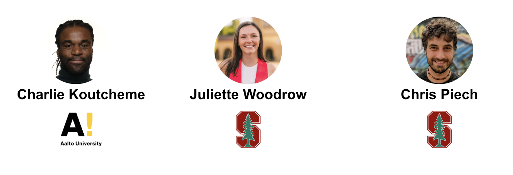 ??? Welcome everyone — I am very happy to have you here. --- # Great News! 🎉 The paper has been accepted to the **2026 SIGCSE Technical Symposium**! <div style="text-align: center;"> 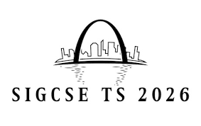 </div> SIGCSE is the flagship conference for CS education research. This year acceptance rate was around 30%. #### This would not have been possible without your help! Thank you! ??? * So you know that when a paper is submitted, you get three reviewers, three independant people who read the paper. All reviewers were very positive about the work, all of them accepted the paper. Usually you always have one reviewer who is more critical and not so much happy. --- # Project Web Pages 🌐 A first version of the project web page is now live: 🌐 [https://koutche.me/cip25-aiep/](https://koutche.me/cip25-aiep/) We also created a dedicated page highlighting all those who contributed to this project.* 👥 [https://koutche.me/cip25-aiep/contributors](https://koutche.me/cip25-aiep/contributors) <div style="position: absolute; bottom: 20px; text-align: center; font-size: 80%;"> * And agreed to be mentioned publicly. </div> If you want to build on top of this work, you can also clone the code repository: 🐙 [https://github.com/KoutchemeCharles/cip25-aiep](https://github.com/KoutchemeCharles/cip25-aiep) ??? * If you see that your name is not present in the contributions page you can send me an email with your name and how you want to be mentioned. I'll look into it and add you. --- # Agenda 1. From Rubrics to ProTransformers 2. Large vs Small Language Models 3. Rubric-Based Feedback with LLMs 4. Training Pipeline (SFT + Preference Optimization) 5. Evaluation Setup 6. Results (TA & LLM-as-judge) 7. Impact and Next Steps ??? So today, I'm going to walk you through the main parts of the work and use that opportunity to provide more information about language models and what they are capable of. --- ## Diagnostic exercises <div style="text-align: center;"> 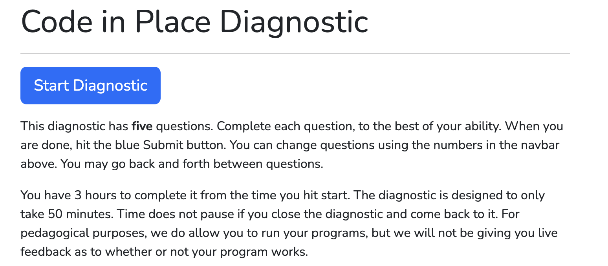 </div> First edition of Code In Place: TAs provided feedback manually. This is not feasible at scale! --- # Rubric Based Feedback Grading Rubrics are at the core of CIP diagnostic feedback systems. <div style="border:1px solid #333; border-radius:8px; background:#f8f8f8; padding:12px; width:80%; margin:auto; font-size:90%;"> <table style="width:100%; border-collapse:collapse;"> <thead> <tr style="border-bottom:1px solid #ccc; text-align:left;"> <th style="padding:6px;">Rubric Item</th> <th style="padding:6px;">Scale</th> </tr> </thead> <tbody> <tr> <td style="padding:6px;"><b>Looping</b></td> <td style="padding:6px;">✅ Correct / ⚠️ Minor error (e.g., off-by-one) / ❌ Major issue</td> </tr> <tr> <td style="padding:6px;"><b>Checking Even or Odd</b></td> <td style="padding:6px;">✅ Correct / ⚠️ Minor error / ❌ Major issue</td> </tr> <tr> <td style="padding:6px;"><b>Printing</b></td> <td style="padding:6px;">✅ Correct / ⚠️ Minor formatting / ❌ Major issue</td> </tr> <tr> <td style="padding:6px;"><b>Syntax Errors</b></td> <td style="padding:6px;">✅ None / ⚠️ Minor / ❌ Major</td> </tr> </tbody> </table> </div> <small><em>Illustrative version of the grading rubric used to assess the “even or odd” exercise.</em></small> --- # Before ChatGPT: ProTransformers - TAs filled rubrics were used to train AI Systems. <div style="text-align:center;"> 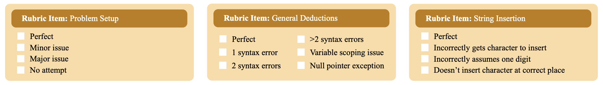 </div> <div style="text-align:center;"> 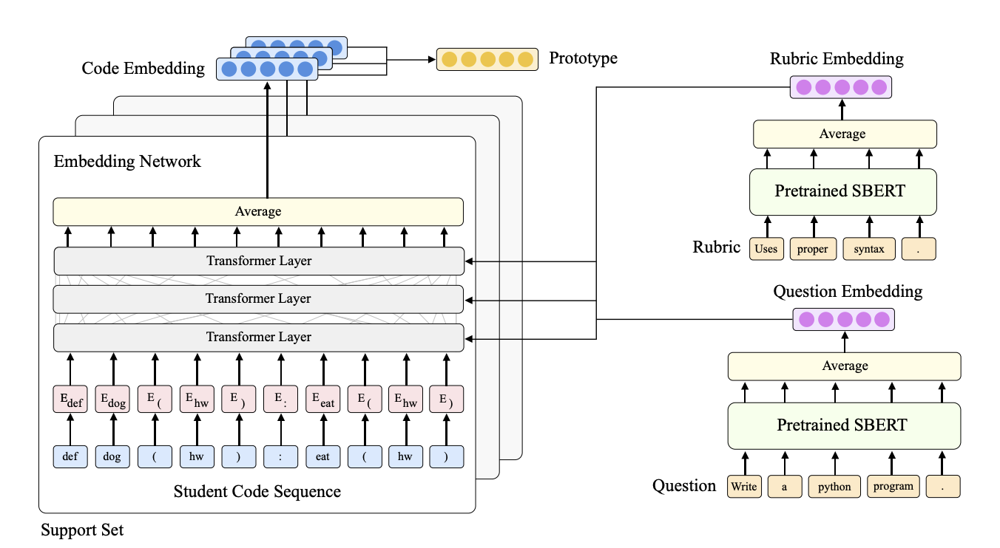 </div> 🌐 One of Chris's student work: [https://arxiv.org/abs/2107.14035](https://arxiv.org/abs/2107.14035) --- # Before ChatGPT: ProTransformers (2) Featured in a New York Times article in 2021! <div style="text-align:center;"> 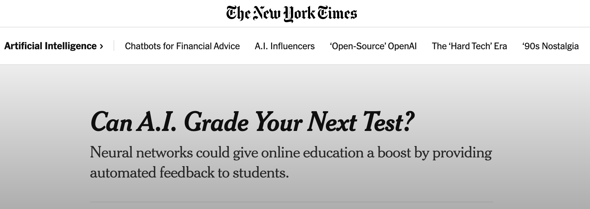 </div> 🌐 [https://www.nytimes.com/2021/07/20/technology/ai-education-neural-networks.html](https://www.nytimes.com/2021/07/20/technology/ai-education-neural-networks.html) ??? These models are powerful but they rely on cloud infrastructure. For Code in Place scale, cost and privacy are major barriers. - **Expensive** to use continuously - Privacy concerns when sending student data outside the institution --- # After ChatGPT: Large Language Models - Large Language Models (LLMs) powering **ChatGPT** - Strengths: - Can provide **very high-quality feedback** - Handle complex reasoning and explanations - Used to provide diagnostic feedback in CIP-3 and CIP-4 - Limitations: <div style="text-align:center;"> 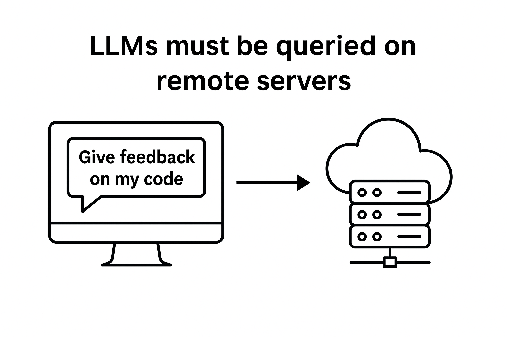 </div> ??? These models are powerful but they rely on cloud infrastructure. For Code in Place scale, cost and privacy are major barriers. - **Expensive** to use continuously - Privacy concerns when sending student data outside the institution We also used Rubrics based feedback, we prompted the model with the rubric and provided a few-shot examples --- # AI Feedback: Small Models - **Small Language Models (SLMs)** (~3B parameters) - Strengths: - Can run **locally** on personal computers or laptops - **Cheaper** to deploy at scale - No internet connection required <div style="text-align:center;"> 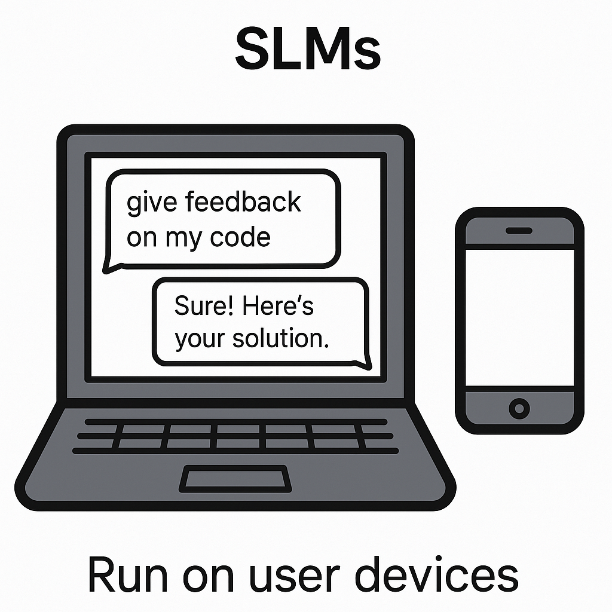 </div> ??? This is the technical challenge we explored: whether small open models, trained with rubrics, can approach the feedback quality of frontier LLMs. --- class: center, middle # Research Question ❓ <br><br> **Can we train small language models to provide high-quality, rubric-based feedback for programming exercises — and approach the performance of large language models like GPT-4.1?** --- # Rubric-Based Feedback with LLMs - Feedback is structured in three steps: 1. **Reasoning**: model explains successes and mistakes (chain-of-thought) 2. **Rubric grading**: structured, item-by-item choices 3. **Feedback**: constructive student-facing message --- # Example Filled Rubric <div style="border:1px solid #333; border-radius:8px; background:#f8f8f8; padding:12px; width:90%; margin:auto; font-size:90%;"> <table style="width:100%; border-collapse:collapse;"> <thead> <tr style="border-bottom:1px solid #ccc; text-align:left;"> <th style="padding:6px;">Rubric Item</th> <th style="padding:6px;">Scale</th> <th style="padding:6px;">Marks (LLM output)</th> </tr> </thead> <tbody> <tr> <td style="padding:6px;"><b>Looping</b></td> <td style="padding:6px;">✅ Correct / ⚠️ Minor error (off-by-one) / ❌ Major issue</td> <td style="padding:6px;">✅ Correct </td> </tr> <tr> <td style="padding:6px;"><b>Checking Even or Odd</b></td> <td style="padding:6px;">✅ Correct / ⚠️ Minor error / ❌ Major issue</td> <td style="padding:6px;"> ❌ Major issue </td> </tr> <tr> <td style="padding:6px;"><b>Printing</b></td> <td style="padding:6px;">✅ Correct / ⚠️ Minor formatting / ❌ Major issue</td> <td style="padding:6px;">⚠️ Minor formatting (extra space)</td> </tr> <tr> <td style="padding:6px;"><b>Syntax Errors</b></td> <td style="padding:6px;">✅ None / ⚠️ Minor / ❌ Major</td> <td style="padding:6px;"> ⚠️ Minor formatting </td> </tr> </tbody> </table> </div> <small><em>Illustrative example of an LLM filling in the rubric for the “even or odd” exercise.</em></small> ??? This design helps the model “think” step by step and also makes the outputs easier to evaluate at scale. --- # Feedback Design Choices ✨ When generating feedback, the model is instructed to: - ✅ **Highlight all positive aspects** of the student’s code - ⚠️ **Address only the first two mistakes** encountered - Prevents overwhelming the learner - Keeps feedback concise and focused <div style="border:1px solid #333; border-radius:8px; background:#f8f8f8; padding:12px; width:80%; margin:auto; font-size:90%; text-align:left;"> <b>Example:</b> - Great job using a <b>loop</b> to iterate over numbers! - Remember to check whether the number is even correctly. - Also, be careful with your print formatting. </div> <small><em>The model praises strengths while pointing out only the first two issues.</em></small> --- # Training Pipeline We trained a 3B open-source model (**Qwen-2.5-Coder-3B**) with two steps: 1. **Supervised Fine-Tuning (SFT)** - Teacher: GPT-4.1 - Student model imitates GPT-4.1 outputs (reasoning, rubric, feedback) 2. **Preference Optimization** - Compare teacher vs. student outputs - Use **Noise Contrastive Alignment (NCA)**, a stronger variant of DPO - Improves reliability, reduces hallucinations ??? The key trick: instead of collecting human preference labels, we used the teacher’s outputs as the “preferred” ones. --- # Evaluation - Feedback quality judged by: - **53** of you submitted your annotations on time before the deadline! - **LLM-as-a-judge** comparison - Metrics: * correctness * accuracy * perceptivity * selectivity * positivity * helpfulness --- # Results (TA Objective Evaluation) <div style="text-align:center;"> 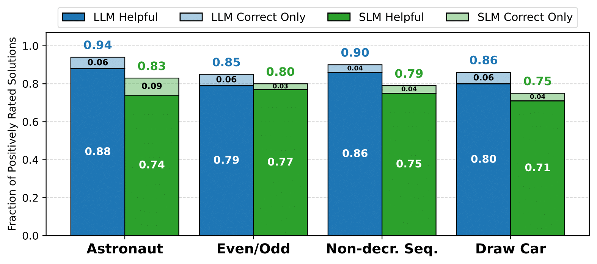 </div> - Our trained SLM closed the gap to GPT-4.1 from ~80% → ~10% - On some tasks, difference was only 4% --- # Results (TA Subjective Evaluation) <div style="text-align:center;"> 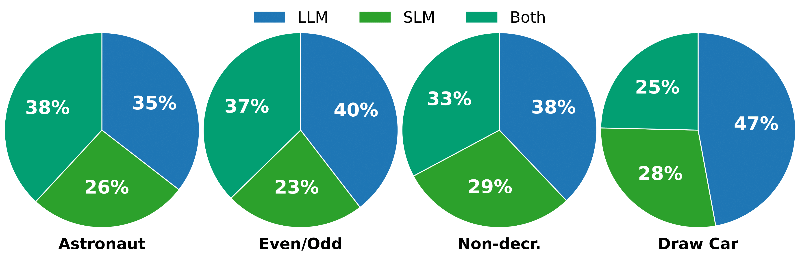 </div> - You often described SLM feedback as: - **More constructive** - **Less harsh** - **More generalizable** --- # Results (LLM-as-judge) <div style="text-align:center;"> 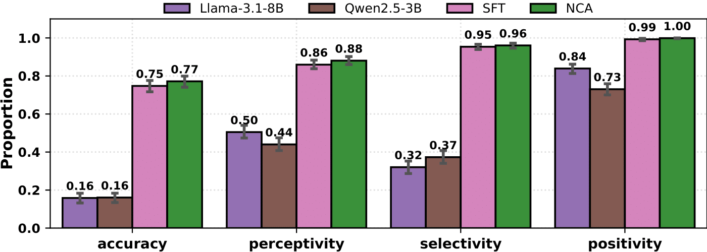 </div> - Base SLM accuracy < 20% - After training: **accuracy 77%, selectivity 96%** - Rarely hallucinates errors - Often highlights at least one key issue --- # Impact - First time a trained **3B SLM** provided diagnostic feedback at this scale - Shows tradeoffs: - **SLMs**: scalable, private, deployable locally - **LLMs**: still needed for the harder cases to provide the most comprehensive feedback - Hybrid workflows are the way forward --- class: center, middle ## Q&A and Discussion Time ??? class: center, middle